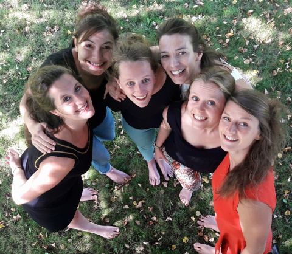

Qui sommes-nous ?
Ensemble, mettons fin au sans-abrisme!
IDR est une organisation médico-sociale convaincue que la fin du sans-abrisme à Bruxelles est possible.
Elle y contribue en sortant de la rue les personnes sans-abri les plus vulnérables en terme de santé, et en mobilisant les associations et le public pour trouver des solutions durables à la problématique du sans-abrisme.
L’approche par l’hygiène, la valorisation de talents des personnes sans-abri, l’implication intensive du réseau d’associations sociales & médicales et la création de logements, sont les leviers qu’utilise IDR pour parvenir à la réinsertion durable en logement.
IDR s'engage à être un acteur enthousiasmant, fédérateur et innovant dans l’action pour mettre fin au sans-abrisme.
IDR partage son expertise et son expérience afin de renforcer tous les acteurs qui, soit interviennent pour réintégrer des personnes vulnérables, soit agissent de façon préventive pour éviter que des personnes précarisées tombent dans la marginalité.
Séance d'info sur l'ASBL: 7 novembre de 9h30 à 10h30
Contact: anne.vantichelen@idr-sv.org
Notre équipe

TRAVAIL DE TERRAIN
Nos récentes interventions
Cliquez pour agrandir
COMMENT NOUS JOINDRE
Asbl Infirmiers de rue
Tel: 02/265 33 00
Email: info@idr-sv.org
Pour toute remaque vous pouvez nous joindre depuis ce formulaire également.